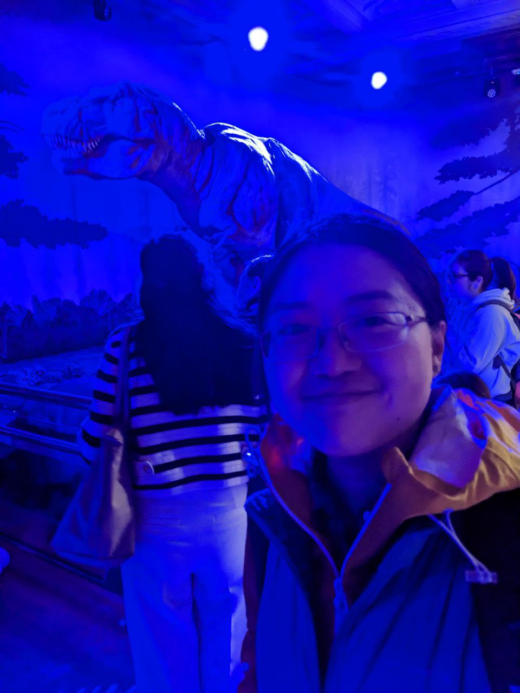

Han Wang
|  | Postsdoctoral fellow |
Contact
Address: School of Mathematics, University of Edinburgh, James Clerk Maxwell Building, Peter Guthrie Tait Road, Edinburgh EH9 3FD, UK
Email:  (Note there are three "n"s!)
(Note there are three "n"s!)
ORCID: https://orcid.org/0000-0002-5841-5474
About me
I grew up in Shanghai, China, and my name in Chinese writing is 王含.
I went to the University of Science and Technology of China in Hefei for 4 years for my B.Sc. degree. Then I went to New York, USA, where I earned a Ph.D. from the Courant Institute of Mathematical Sciences, New York University under the supervision of Oliver Bühler. My journey continued at University of Toronto, where I spent 1.5 years working with Nicolas Grisouard. Since April 2022, I started my second postdoc at University of Edinburgh, working with Jacques Vanneste and remotely with William R. Young.
I'm primarily interested in studying the differences and connections between balanced and unbalanced flows in the atmosphere and ocean or their interfaces. I'm happy to use any possible tool that can be helpful, ranginging from statistical fluid mechanics, asymptotic analysis, numerical simulations, to machine learning algorithms.